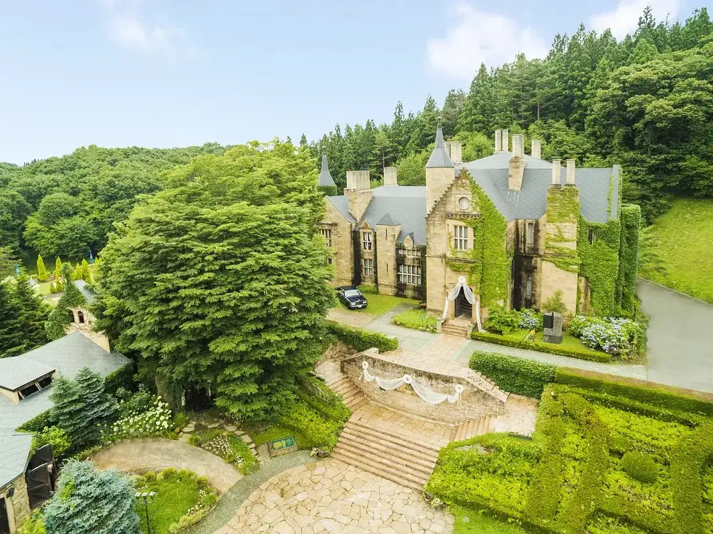
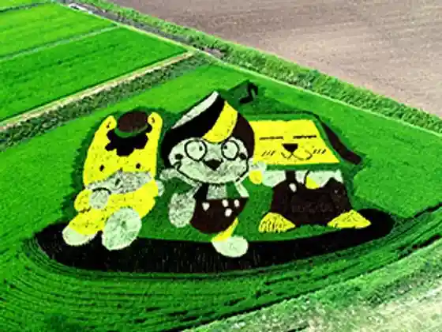
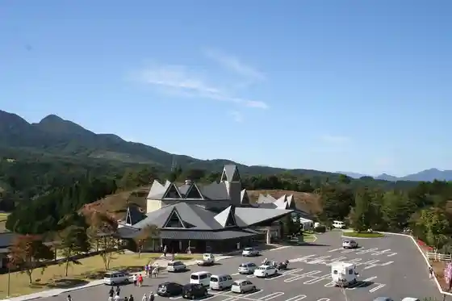
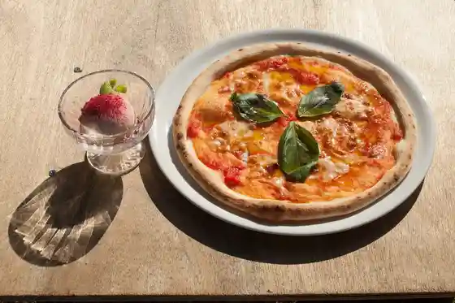

Japan / Gunma / Takayamamura
Takayamamura, Gunma
Takayamamura · Gunma
Takayamamura
Highlighted on the Gunma map.

Sights
Rokkuhato Shiro
Takayamamura, Gunma · 0279-63-2101 · Official / source link
Tambo Ato (Roadside Station Nakayama Bonchi)
Takayamamura, Gunma · 0279-63-2111 · Official / source link

Roadside Station Nakayama Bonchi
Takayamamura, Gunma · 0279-63-2000 · Official / source link

Shokuji Tokoro Ogiya
Takayamamura, Gunma · 0279-63-3339 · Official / source link
garage cafe R36
Takayamamura, Gunma · 0279-25-8737 · Official / source link

Sobaya Taka Yanagi
Takayamamura, Gunma · 0279-63-3883 · Official / source link
Nomikui Tokoro
Takayamamura, Gunma · 0279-26-7405 · Official / source link
Resutoran Nakayama Bonchi (Roadside Station Nakayama Bonchi)
Takayamamura, Gunma · 0279-63-2000 · Official / source link
Takayamamura Onsen Fureai Plaza (Roadside Station Nakayama Bonchi)
Takayamamura, Gunma · 0279-63-2000 · Official / source link
Takayamamura Fureai Park (Roadside Station Nakayama Bonchi)
Takayamamura, Gunma · 0279-63-2000 · Official / source link
Aru Mori no Hanashi Mori no Fiirudo to Ritoriito Experience
Takayamamura, Gunma · Official / source link